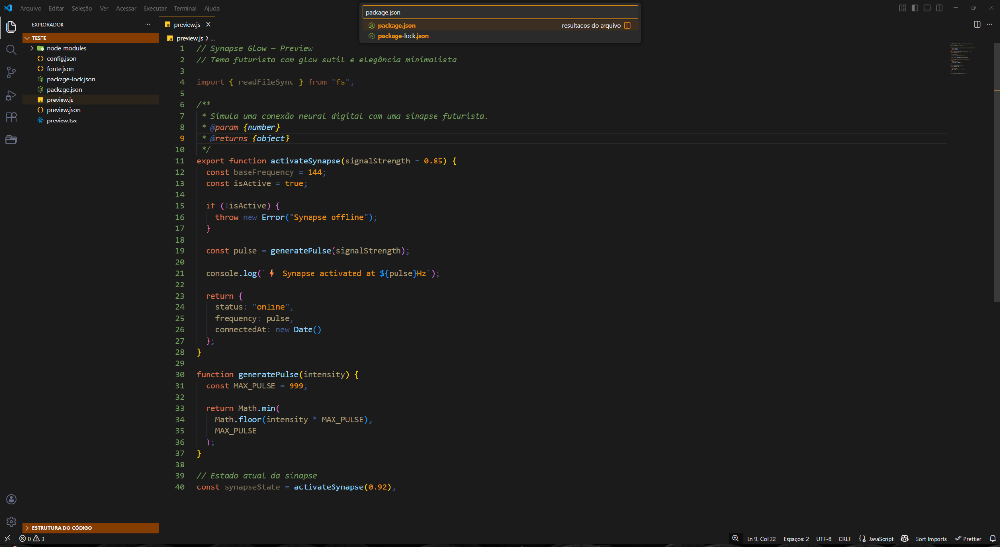
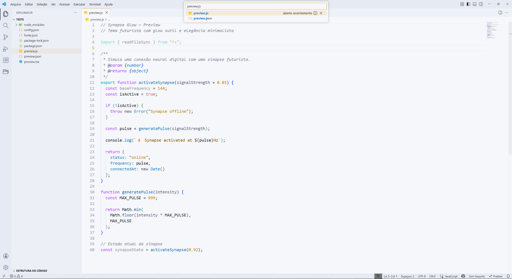

Opção 1 — Marketplace (se publicado)
- Abra o VS Code.
- Vá em Extensions (Ctrl+Shift+X).
- Pesquise por Synapse Glow.
- Clique em Install e depois selecione o tema em Preferences → Color Theme.
Glow sutil, elegância minimalista e conforto visual para longas sessões de programação. Inclui modos Dark e Light.

No celular, as imagens aparecem primeiro para mostrar o tema logo de cara.

Bom contraste, cores bem definidas e leitura mais fácil no código.
Bom para estudar, programar por mais tempo e usar à noite.
Esse tema funciona no VS Code.
Você pode instalar pelo Marketplace ou pelo GitHub.
Depois reinicie o VS Code e selecione em Preferences → Color Theme.
Respostas rápidas para instalação e uso no dia a dia.
Reinicie o VS Code e abra Preferences → Color Theme. Se instalou via pasta, confirme se o diretório do tema ficou dentro de .vscode/extensions e se não está “aninhado” em subpastas.
Abra a paleta (Ctrl+Shift+P), digite Color Theme e selecione Synapse Glow (Dark) ou Synapse Glow (Light).
Sim. Ajuste o brilho/contraste do display e considere desativar “HDR” se estiver afetando as cores. No VS Code, você também pode ajustar a fonte e o zoom para melhorar legibilidade.
Claro. Use o botão do GitHub nesta página para acessar o repositório, abrir issues e enviar sugestões. Feedback técnico é bem-vindo.